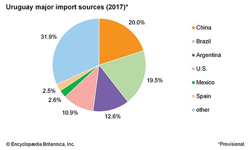
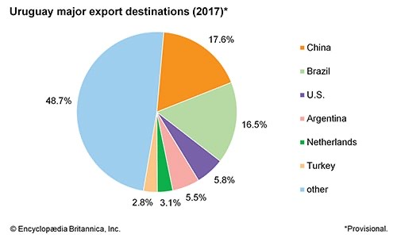

ECONOMIA
En general, los uruguayos disfrutan de un nivel de vida relativamente alto y la riqueza del país está dividida de manera más equitativa que en muchos otros países de América del Sur. El producto interno bruto (PIB) de Uruguay es comparativamente alto para la región. Históricamente, el gobierno controlaba muchas de las empresas e industrias de la nación, especialmente los servicios públicos, la energía, los teléfonos y los ferrocarriles. En la década de 1990, sin embargo, Uruguay comenzó a privatizar varias industrias que habían sido monopolios estatales.
La columna vertebral de la economía uruguaya han sido los ingresos por exportaciones agrícolas, especialmente lana y carne. Esta dependencia del comercio con otros países ha dejado a Uruguay vulnerable a cambios en los precios y la demanda mundial. Las recesiones en Brasil y Argentina, sus principales socios comerciales, perjudicaron la economía de Uruguay a principios del siglo XXI.
AGRICULTURA
Aunque aporta menos del 10 por ciento del PIB del país, la agricultura permanece en el corazón de la economía uruguaya. Más de 10 millones de bovinos y 15 millones de ovejas ocupan la mayor parte de las tierras agrícolas. Sin embargo, se necesitan relativamente pocas personas para criar ganado y el sector emplea a menos del 5 por ciento de la fuerza laboral. La lana cruda y la carne de vacuno son los principales productos básicos que se producen. Junto con los animales vivos, las pieles y cueros y otros productos ovinos y bovinos, aportan unas dos quintas partes de los ingresos de exportación de Uruguay. Un brote de fiebre aftosa en 2001 causó graves daños a las industrias dependientes del ganado del país.
Debido a que la mayor parte de las tierras agrícolas se dedican a la cría de ganado, la recolección de cultivos ha sido menos importante. Los principales cultivos son arroz, trigo, maíz, naranjas, caña de azúcar, semillas de girasol y uvas, que se utilizan para hacer vino. La pesca y la silvicultura son igualmente industrias más pequeñas en Uruguay. Además, Uruguay fue el primer país del mundo en legalizar el cultivo, venta y consumo de cannabis.
FABRICACIÓN, MINERÍA Y ENERGÍA
La agricultura también proporciona la base para muchas de las industrias del país, incluida la fabricación de alimentos procesados y artículos de cuero. Las otras industrias principales producen bebidas, productos químicos, textiles y productos de tabaco. Montevideo tiene la mayor concentración de fábricas. La industria manufacturera emplea alrededor del 20 por ciento de la fuerza laboral y aporta más del 15 por ciento del PIB.
Además de su rico potencial agrícola, Uruguay casi carece de recursos físicos naturales. La pequeña industria minera produce principalmente materiales de construcción como cemento, yeso, grava, mármol y piedra rota. Las plantas hidroeléctricas aprovechan la energía hidráulica de los ríos Negro y Uruguay para producir parte de la electricidad del país. Sin embargo, sin depósitos conocidos de petróleo, gas natural, carbón o hierro, la nación debe importar casi todo su combustible.
SERVICIOS Y COMERCIO
Más de la mitad de los trabajadores de Uruguay están empleados en el comercio o en industrias de servicios como finanzas, turismo, administración pública, programación de computadoras y educación. Juntos, los servicios y el comercio producen más del 60 por ciento del PIB, y las finanzas por sí solas representan alrededor del 10 por ciento. Uruguay se ha convertido en un centro de banca extraterritorial internacional, en parte porque sus leyes protegen a los inversores de muchas formas de impuestos. Los programas informáticos y las industrias turísticas se han vuelto cada vez más importantes para la economía. El clima templado y las playas de arena atraen a los turistas a centros turísticos costeros como Punta del Este durante todo el año.
Uruguay es miembro del Mercado Común del Sur o Mercado Común del Sur (MERCOSUR). Gran parte del comercio de la nación ha sido con otros miembros del MERCOSUR, en particular Brasil y Argentina. En la mayoría de los años, desde mediados del siglo XX, Uruguay ha tenido un déficit comercial, es decir, los bienes que importaba cuestan más dinero de lo que gana con los bienes que exporta. Las principales importaciones son maquinaria y electrodomésticos, productos químicos, productos minerales y equipo de transporte. La mayoría de las exportaciones de Uruguay provienen de su industria ganadera, especialmente animales vivos, carne congelada, lana y otros textiles, cueros y pieles.
LABORAL Y FISCAL
Los servicios y el comercio emplean a más de la mitad de la fuerza laboral uruguaya, mientras que alrededor de una quinta parte de los trabajadores se dedican a la manufactura. Son relativamente pocos los empleados en instituciones financieras y empresas agrícolas. La semana laboral estándar es de 44 a 48 horas. Los trabajadores tienen derecho legalmente a 20 días de vacaciones pagadas después de un año de empleo. Las mujeres representan aproximadamente la mitad de la fuerza laboral, pero la mayoría de ellas tienen trabajos de bajos salarios y hay pocas mujeres en los escalones superiores de las empresas uruguayas. Aproximadamente una octava parte de los trabajadores uruguayos están afiliados a sindicatos; la mayoría son miembros de una confederación laboral llamada Asamblea Intersindical de Trabajadores - Federación Nacional de Trabajadores.
Uruguay no ha tenido impuestos sobre la herencia o la renta personal desde 1974. Las principales fuentes de ingresos del gobierno son los impuestos al valor agregado y los impuestos a la exportación. También se recaudan impuestos sobre bienes raíces e impuestos corporativos.
TRANSPORTE Y COMUNICACIONES
Uruguay tiene excelentes carreteras y ferrocarriles. Para el transporte dentro del país, la mayoría de las mercancías y los pasajeros viajan por carretera. Montevideo es el eje de la red de transporte. Muchas carreteras pavimentadas, las principales carreteras y la red ferroviaria salen de la capital del país. Montevideo también es el puerto principal para los barcos de alta mar y por eso maneja la mayor parte del comercio exterior. Un sistema de hidroala, en el que una aleta subacuática eleva el barco mientras viaja, acelera a los pasajeros sobre el Río de la Plata, desde Montevideo hasta Buenos Ares, Argentina. Los barcos y embarcaciones también viajan por las vías navegables interiores de Uruguay. Un aeropuerto internacional está ubicado en Carrasco, a las afueras de Montevideo.
El país cuenta con uno de los mejores sistemas de telecomunicaciones de América Latina, con un sistema telefónico totalmente digitalizado. Uruguay tiene muchas estaciones de radio y canales de televisión y más de 100 periódicos. Muchos de los periódicos están afiliados a partidos políticos, como El País, del partido Blanco. Entre los diarios independientes más respetados se encuentran el semanario Búsqueda y el diario El Observador Económico. El uso de Internet creció rápidamente en Uruguay en la década de 1990, ya principios del siglo XXI contaba con unos 400.000 usuarios.
PATRONES DE ACUERDOS DE COMERCIO
La balanza de pagos de Uruguay ha sido en general negativa (produciendo un déficit comercial) desde mediados del siglo XX. El gobierno ha levantado muchas restricciones a las importaciones desde la década de 1980. Las principales exportaciones son productos de origen animal (principalmente carne congelada) y animales vivos, productos alimenticios, lana y otros textiles y cueros. Las principales importaciones incluyen maquinaria, electrodomésticos, productos químicos, equipo de transporte y alimentos procesados. Brasil ha sido tradicionalmente el principal socio comercial de Uruguay, pero en la década de 2010 el comercio con China se había vuelto casi tan importante como el de Brasil. Argentina, Estados Unidos y Alemania también son socios importantes.

